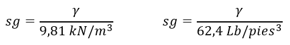
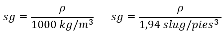
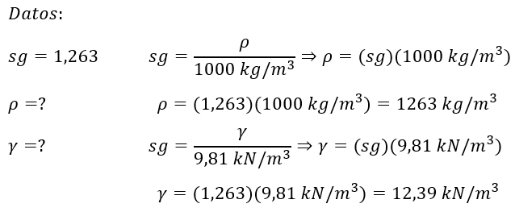

Tema 3: Gravedad específica.
La gravedad específica se define como la relación de la densidad de una determinada sustancia con la densidad del agua, cuando ambas están a la misma temperatura. Para su cálculo se usa como referencia el agua a 4°C, debido a que es a esta temperatura que alcanza su densidad más grande.
Por lo tanto, la gravedad específica puede definirse de dos maneras:
- Cociente de la densidad de una sustancia entre la densidad del agua a 4°C.

- Cociente del peso específico de una sustancia entre el peso específico del agua a 4°C

Ejemplo:
La glicerina posee una una gravedad especifica de 1,263 a 20°C. Calcule su densidad y peso específico.

Respuesta: La sustancia tiene un peso específico de 12,39 kN/m3 y una densidad de 1263 kg/m3.
Enlaces de Interés
- https://www.ingenierizando.com/conceptos/gravedad-especifica/
- https://www.udocz.com/apuntes/109935/gravedad-especifica-mecanica-de-fluido
- https://gravedad.net/ejemplos-de-gravedad-especifica